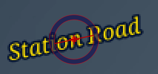
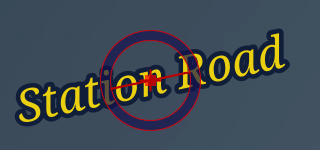
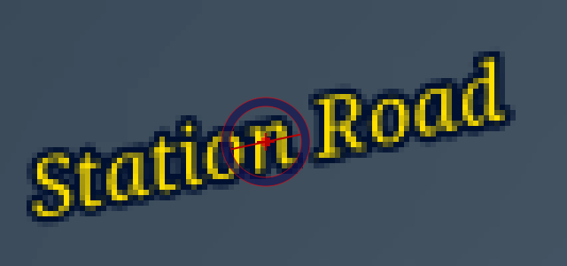
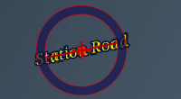
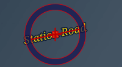
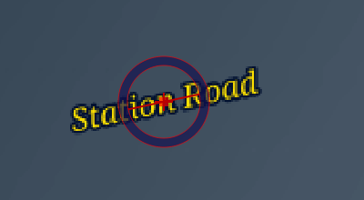
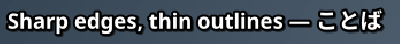
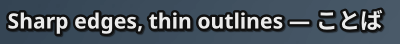
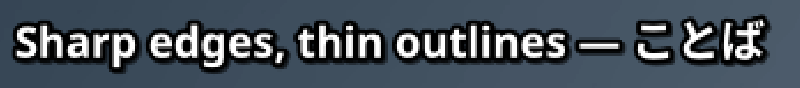

Before: real screenshots of today’s app (qt 6c0d80daa build), under Xvfb with QT_SCALE_FACTOR 1 and 2, Text Z rotation tool on the sign line. After: the proposal, not the app: libass draws the same script at the picture’s on-screen pixel size with its storage size kept at the video’s (ffmpeg’s libass filter, original_size=640x360), and the tool’s ring is drawn at legacy’s sizes in logical pixels (so 2× the device pixels at 200 %). Every crop is shown at the same on-page size; 100 % crops are magnified with nearest-neighbour so pixels stay visible.








